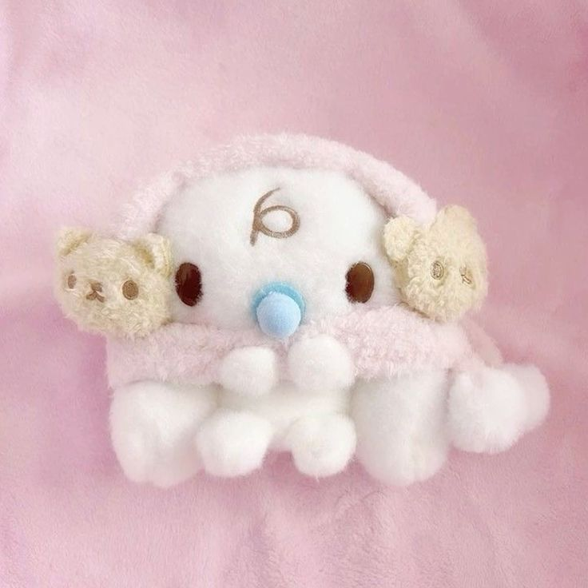
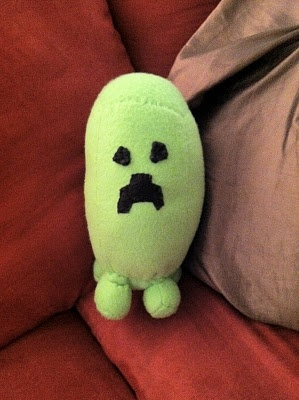
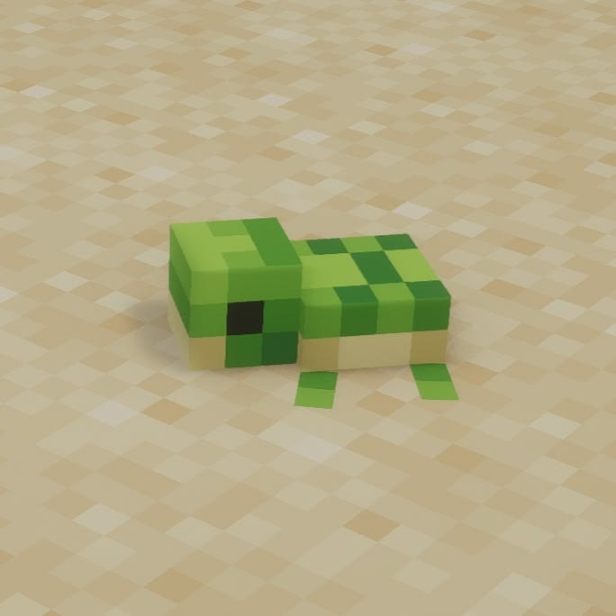
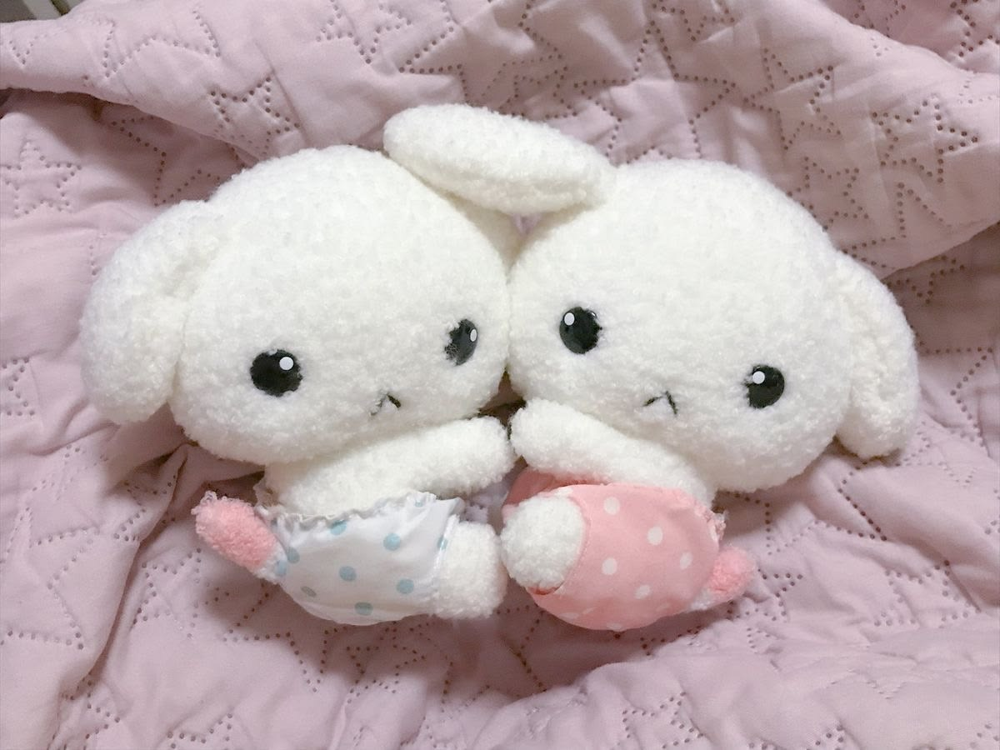

BambiSMP—/—Checking players…
play.bambismp.site
Checking
Checking our cozy little world…

play.bambismp.site



Find compatible content on Modrinth or bring a file from your PC.
Only compatible Minecraft 1.20.1 content will appear here.
Find neighborhoods, explored land and your next cozy corner.
Storage and performance controls with no tiny unreadable text.
Not selectedMinecraft, Forge, mods and your worlds are kept inside this folder.
Starts at 75% by default. You can choose up to all installed physical RAM.
View logs, screenshots and manually managed files.
PLAY launches Minecraft and joins automatically with Quick Play.